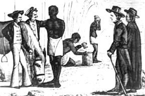
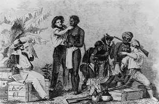
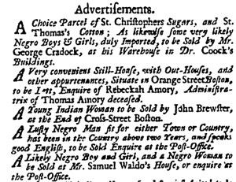

|
New England slavery was something of a paradox, a series of paradoxes, in fact.
The international slave trade increased the fortunes of many local merchants,
but the region's black population was never very large. Slavery was
insignificant in the overall New England economy, but it was crucial in certain
trades and establishments. It was characterized by more freedoms and milder
conditions than elsewhere, but under the surface of life slavery in New England
was a bubbling cauldron of violence and retribution.
|

The first slaves arrive in Massachusetts.
|
Even the words slave and slavery had confusing applications in colonial New
England. When used as a description of the status of criminals and war
prisoners, as an indictment of government and authority, or as socially
derogatory terms, slave and slavery applied to whites as well as blacks. Slave
was also employed interchangeably with servant, and in reference to all blacks
regardless of status, making it difficult to know just who among the
seventeenth- and eighteenth-century population was bound, to what extent, or was
a free person.
Several censuses and population estimates prior to the American Revolution
establish that blacks never were more than 2.5 percent of the New England
population. By the 1770s there were nineteen blacks in Vermont, .04 percent of
the total population. New Hampshire had 519, or 1.1 percent; Massachusetts
(including Maine) 5,249, or 1.8 percent; Connecticut 6,464, or 3.2 percent; and
Rhode Island 3,761, or 6.3 percent.
The comparatively high figures for Connecticut and Rhode Island suggest that
had their topography and climate resembled the South's, slavery might have taken
firmer hold in these colonies. Its relative importance in Rhode Island can be
explained by three principal factors: the slave-trading and commercial
significance of Newport, the rum distilling industry, and large-scale
agriculture around Narragansett Bay. Reliance on rum as a medium of exchange in
the international slave trade and as a popular domestic drink made it especially
ironic that Rhode Island Africans engaged in its manufacture played an unwilling
role in the capture of their overseas brethren.
Extensive farms in the Connecticut River valley, in the eastern portion of
the colony, and in the Narragansett country of southern Rhode Island--averaging
300 acres in the mid-eighteenth century--account for the densest African
populations in New England. Dairying and cattle raising were the major slave
activities, but sheep, horse, vegetable, and tobacco production were also
important. Some wealthy whites on the largest farms owned up to fifty slaves.
Robert Hazard, a South Kingston, Rhode Island, dairy farmer, for example,
employed twenty-four slave women in his creamery alone.
Elsewhere in New England Africans worked at almost every occupation. After
agriculture, domestic service seems to have been their most common occupation,
followed by skilled and unskilled labor in manufactures and trades. Positioned
between the slave metalworkers employed on Newport's Touro Synagogue at the
upper end of the ladder, and the Boston chimney sweeps and lemon sellers at the
bottom, were coopers, tailors, carpenters, printers, ship caulkers, and other
artisans that formed a complex occupational slave hierarchy. Slavery as an
institution might not have been essential to the New England economy, but
individual slaves proved vitally important in its every nook and cranny.
|

An early slave sale in Massachusetts
|
Except on some large farms where they were grouped separately after the
Southern fashion, most slaves lived in their owners' homes, often sharing their
tables. Many bondsmen attended and were members of the Puritan churches. By all
accounts--contemporary and modern--slavery in New England was less brutal than
elsewhere. One indication was the slaves' relative equity in the judicial
system. New England slaves convicted of crimes generally were given the same
punishments as whites for the same offenses, and in court slaves had full legal
rights except the right to serve on juries. Indeed, after 1701 slave plaintiffs
won almost every manumission suit they initiated, culminating with the 1783
judicial declaration ending slavery in Massachusetts. Other New England states
soon emulated this abolition decree.
Despite these comparatively liberal arrangements, tension and terror lurked
near the surface of slave life in New England. As elsewhere, resistance to
slavery in New England took many forms, from violent retaliation against
individual whites to organized efforts to end the peculiar institution itself.
An incident recorded in the Boston News-Letter, June 9, 1763, illustrates
a number of important points:
A most shocking Murder was committed last Saturday at Taunton [Mass.], by a
Negro Fellow belonging to Dr. McKinstry;-a Sister of the Doctor's getting up
early in the Morning to iron Cloaths, the Negro (after making a Fire) got his
Master's horse, and left him at the Door, and finding an Opportunity took up a
hot Flat Iron, with which he struck the Woman on the Back of her Head, and
stunned her, he repeated the Blow, then dragged her down in the Cellar, and
there with an old Ax, struck her several times; he then took the hot Iron and
rubb'd over her Face, flicking the Point of it into her Eyes, whereby she was
scorch'd considerably; after he had done this, he took the Horse and rode off-
The Family soon got up and found the Woman in the above Condition; she continued
till the Evening of the next Day; and then died: the Negro was pursued, and
taken up at Newport [R.I.], and confessed the Fact,-What induced the Fellow to
perpetrate this Crime is not known, as he was always treated well, and there had
been no Difference with him in the Family.
Episodes like these were common: poisoning, arson, murder, and assault
revealed profound discontent among blacks, and equally profound fear and
incomprehension among whites, illustrated when another newspaper, commenting on
the above-mentioned affair, staunchly maintained that most blacks had no
complaints against their owners. Retaliation and protest were simply "the bad
Effects of Negroes too freely consorting together."
New England slaves did indeed consort together in an effort to escape
constant white control. So-called alley society existed wherever there was an
appreciable community of free people, slaves, free blacks, and white servants.
Pleasure seeking such as eating and drinking together in out-of-the-way
places--in waterside warehouses and isolated mid-block buildings, for
example--was common. More solemn occasions such as funerals and burials, on the
other hand, demonstrated in singing and dancing a lingering West African
commitment to the continuation of life after death. Blacks of varying status
mingled freely on these occasions, revealing a degree of social cohesion
surprising to whites.
In southern New England blacks in certain towns, sometimes of an entire
colony, banded together on Election Day at the end of May each year to choose a
"governor" or "king" at an inaugural festival featuring games, singing, dancing,
and storytelling. The governor and his appointed advisors adjudicated minor
disputes among blacks and even on occasion between blacks and whites. The
principal function of these activities, however, was to perpetuate African
cultural traditions in a rough approximation of West African political and
judicial rule by a chief and council of elders. Surviving from about 1750 into
the 1830s, Election Day was a ceremonial assertion of black ethnic pride.
|

Advertisements for runaway slaves in a Boston newspaper
|
Blacks also consorted together to petition for their freedom. In the
revolutionary era particularly, and especially in and around Boston, bound and
free blacks approached the colonial government at least a dozen times using the
libertarian rhetoric of the independence movement. One 1773 appeal was
particularly telling. After outlining the detrimental effects of slavery on
family ties, morality, and freedom of worship, the petitioners claimed as their
own the "natural rights" of white people, pointing out correctly that no local
laws had ever legalized their bondage. Foregoing any claims to financial
compensation, they made two demands: "some part of the unimproved land,
belonging to the province, for a settlement," or, failing that, transportation
"to our native country within a short time."
The impulse toward separation--on an American land grant or home in
Africa--ran through the entire slavery period in New England. Blacks utilized
other less spectacular ways--alley society, funerals, Election Day, and more--to
gain as much independence from whites as possible. Despite the relatively mild
facade of New England slavery, the impulse toward self-determination always was
present.
And when this was difficult, as it usually was, blacks resorted to violence,
sometimes, to affirm their humanity. From individual retaliations to collective
action in pursuit of freedom, New England's slaves, servants, and free people
never acquiesced to the peculiar institution.
Source: Randall M. Miller and John David Smith, eds. Dictionary of
Afro-American Slavery (Westport, CT: Praeger, 1997), 522-24.
|